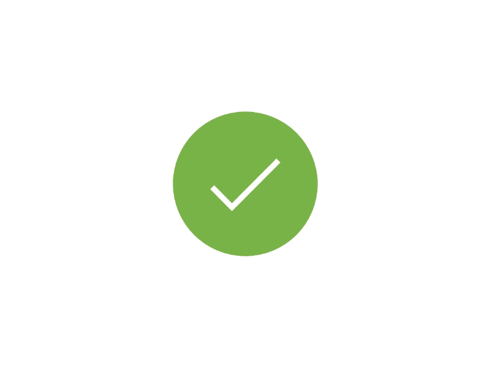

<ion-header>
  <ion-toolbar>
    <ion-title size="large" color="dark">Help</ion-title>
    <ion-buttons slot="end">
      <ion-button (click)="startApp()" [hidden]="!showSkip">Skip</ion-button>
    </ion-buttons>
  </ion-toolbar>
</ion-header>

<ion-content class="ion-padding-bottom">
  <ion-slides *ngIf="viewEnter" #slides (ionSlideWillChange)="onSlideChangeStart($event)" [pager]="true">
    <ion-slide class="ion-padding" *ngFor="let page of pages">
      <div class="ion-slide-content">
        <ion-icon class="display-icons" [name]="page.icon"></ion-icon>
        <h1><b>{{ page.title }}</b></h1>
        <h4>{{ page.overview }}</h4>
        <p *ngFor="let help of page.help">{{ help }}</p>
      </div>
    </ion-slide>
    <ion-slide>
      <div class="ion-slide-content">
        
        <h2>You're all up to speed.</h2>
        <p>You can revisit this help page from the side menu later.</p>
        <ion-button (click)="startApp()" fill="clear">
          Start lifting <ion-icon slot="end" name="arrow-forward"></ion-icon>
        </ion-button>
      </div>
    </ion-slide>
  </ion-slides>
</ion-content>
